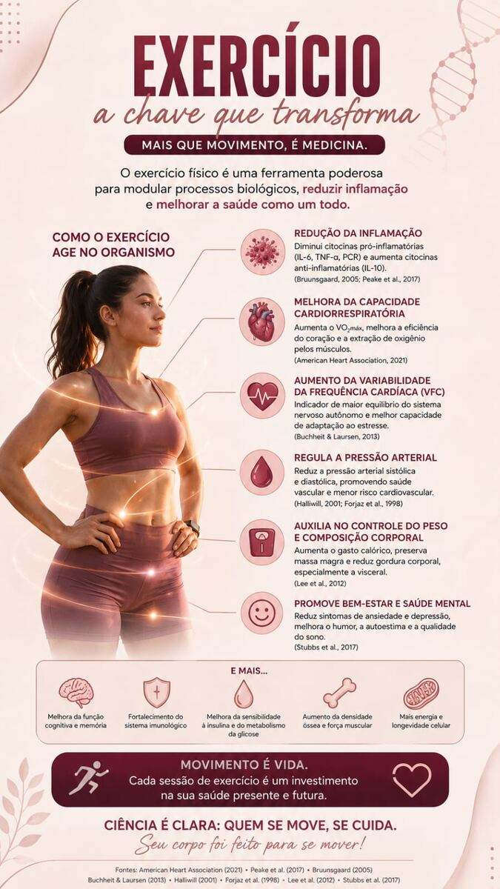
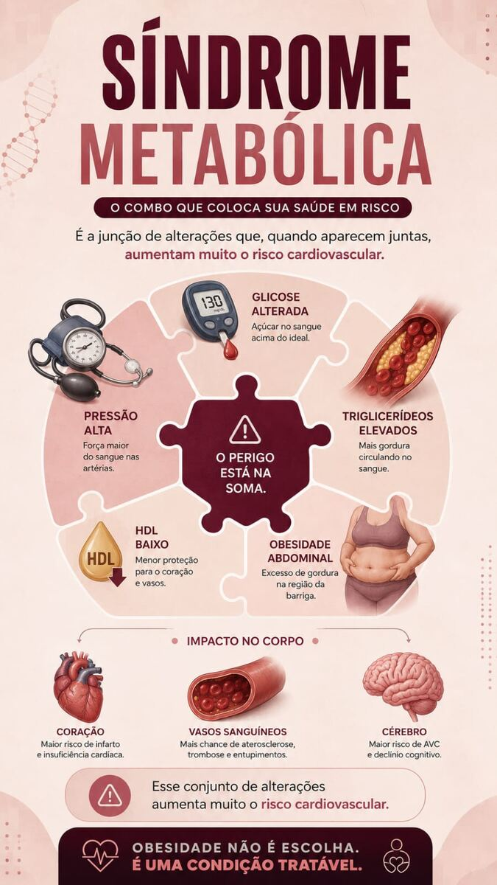
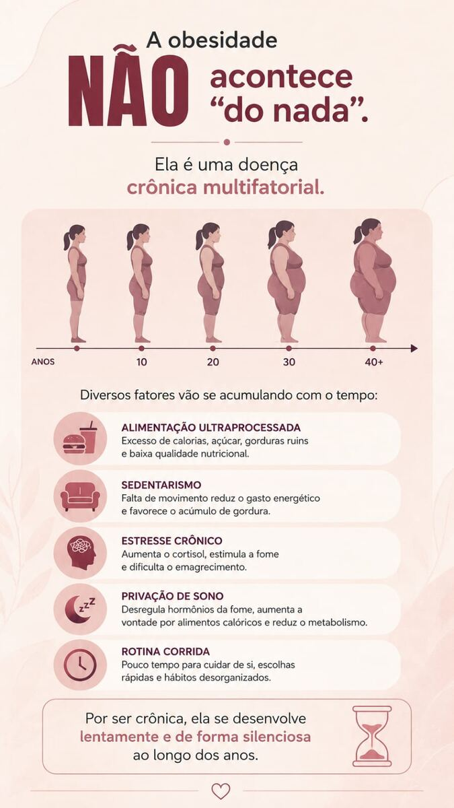
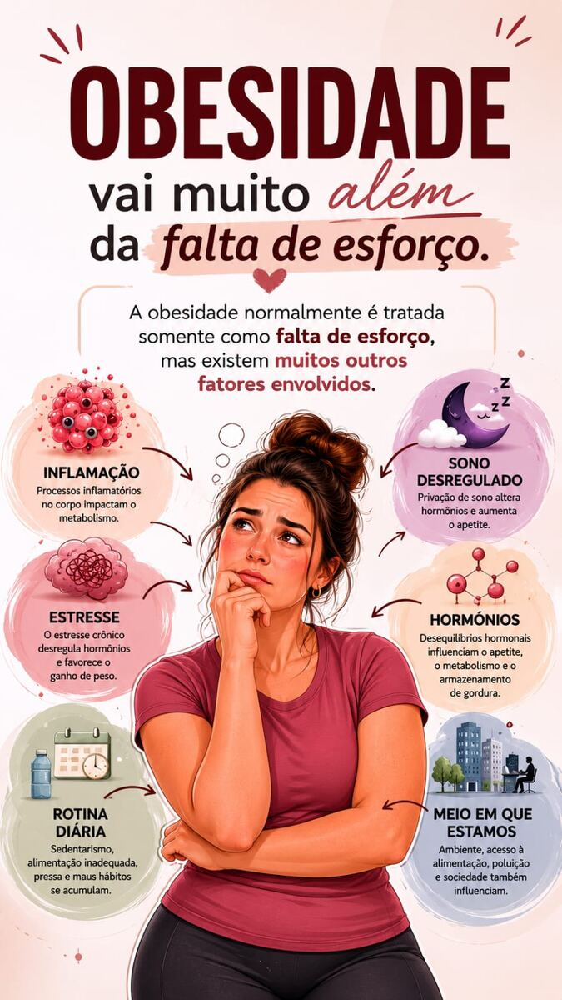

Treinos elaborados com apoio técnico especializado, respeitando as particularidades de cada aluno.
O Exercício Físico como Intervenção Terapêutica
O exercício físico atua como ferramenta de modulação de processos biológicos, reduzindo inflamação sistêmica e promovendo benefícios amplos à saúde. Entre os principais mecanismos: redução de citocinas pró-inflamatórias e aumento de citocinas anti-inflamatórias; melhora da capacidade cardiorrespiratória e da variabilidade da frequência cardíaca; regulação da pressão arterial; controle do peso e da composição corporal, com preservação de massa magra e redução de gordura visceral; e benefícios sobre função cognitiva, densidade óssea, sensibilidade à insulina e bem-estar psicológico.

Síndrome Metabólica
A síndrome metabólica caracteriza-se pela ocorrência conjunta de alterações — glicose alterada, pressão arterial elevada, triglicerídeos elevados, HDL reduzido e obesidade abdominal — que, isoladamente, já representam fatores de risco, mas cuja combinação eleva substancialmente o risco cardiovascular. O impacto se estende a coração, vasos sanguíneos e cérebro, aumentando o risco de infarto, aterosclerose e declínio cognitivo.

Obesidade como Condição Crônica Multifatorial
A obesidade não decorre de um fator isolado, mas do acúmulo progressivo de múltiplos fatores ao longo do tempo: alimentação ultraprocessada, sedentarismo, estresse crônico, privação de sono e rotina desorganizada. Por seu caráter crônico, desenvolve-se de forma gradual e muitas vezes silenciosa ao longo dos anos.

Além da Falta de Esforço
Reduzir a obesidade a uma questão de esforço individual ignora fatores relevantes no seu desenvolvimento: processos inflamatórios, distúrbios do sono, estresse crônico, desequilíbrios hormonais e o ambiente em que a pessoa está inserida — acesso a alimentação adequada, rotina e contexto social. Reconhecer essa complexidade é o primeiro passo para uma abordagem eficaz: a obesidade é uma condição tratável, e não uma escolha.

Fontes: American Heart Association (2021); Peake et al. (2017); Bruunsgaard (2005); Buchheit & Laursen (2013); Halliwill (2001); Forjaz et al. (1998); Lee et al. (2012); Stubbs et al. (2017).
Treino individualizado, com acompanhamento técnico especializado.